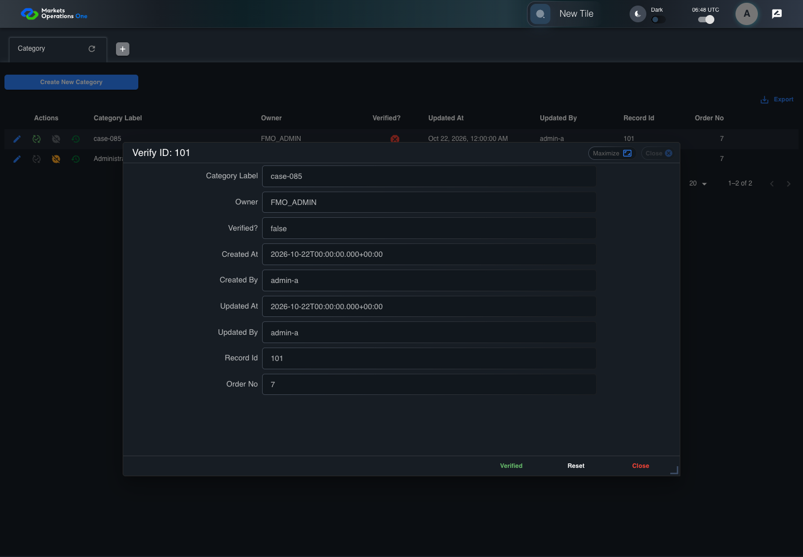

BFF-ADM-085 current BFF administration through actual UI
FAIL · application/run-072/bff-adm-085-current-bff-administration-through-actual-ui-6f667ccdf9cb-attempt-1 · ACTUAL_APPLICATION_LOCAL_SERVICES
Actual current React and exact-current BFF admin controllers/services/JPA with actual migration DDL in disposable PostgreSQL. Controlled OUD/EMS2 identities and local Spring bootstrap. Fixture SQL seeds/mutates isolated records; service errors are actual database errors. Undefined agreed messages remain unresolved acceptance.
2026-10-22T06:48:34.129Z to 2026-10-22T06:48:45.035Z
Assertions and result · Artifact manifest · Exact run inputs and source hashes
Result SHA-256:239d93b087dc39341d96ad5b658e0df5b9cf07767c14bbb527761c450d2de5d7Retained failure details
[
{
"message": "Error: \u001b[2mexpect(\u001b[22m\u001b[31mlocator\u001b[39m\u001b[2m).\u001b[22mtoBeVisible\u001b[2m(\u001b[22m\u001b[2m)\u001b[22m failed\n\nLocator: locator('.MuiAlert-root').filter({ has: locator('.MuiAlert-message') })\nExpected: visible\nTimeout: 5000ms\nError: element(s) not found\n\nCall log:\n\u001b[2m - Expect \"toBeVisible\" locator('.MuiAlert-root').filter({ has: locator('.MuiAlert-message') }) with timeout 5000ms\u001b[22m\n\u001b[2m - waiting for locator('.MuiAlert-root').filter({ has: locator('.MuiAlert-message') })\u001b[22m\n",
"stack": "Error: \u001b[2mexpect(\u001b[22m\u001b[31mlocator\u001b[39m\u001b[2m).\u001b[22mtoBeVisible\u001b[2m(\u001b[22m\u001b[2m)\u001b[22m failed\n\nLocator: locator('.MuiAlert-root').filter({ has: locator('.MuiAlert-message') })\nExpected: visible\nTimeout: 5000ms\nError: element(s) not found\n\nCall log:\n\u001b[2m - Expect \"toBeVisible\" locator('.MuiAlert-root').filter({ has: locator('.MuiAlert-message') }) with timeout 5000ms\u001b[22m\n\u001b[2m - waiting for locator('.MuiAlert-root').filter({ has: locator('.MuiAlert-message') })\u001b[22m\n\n at BffAdminApp.errorAlert (/Users/lushevol/code/github/ratan-release-impact/workbench/e2e/support/bff-admin-app.ts:166:169)\n at /Users/lushevol/code/github/ratan-release-impact/workbench/e2e/audit-specs/bff-admin.spec.ts:49:166\n at AuditCapture.step (/Users/lushevol/code/github/ratan-release-impact/workbench/e2e/support/audit-fixture.ts:94:21)\n at /Users/lushevol/code/github/ratan-release-impact/workbench/e2e/audit-specs/bff-admin.spec.ts:18:27",
"location": {
"file": "/Users/lushevol/code/github/ratan-release-impact/workbench/e2e/support/bff-admin-app.ts",
"column": 169,
"line": 166
},
"snippet": "\u001b[90m at \u001b[39m../support/bff-admin-app.ts:166\n\n 164 | }\n 165 | async assertUnchanged():Promise<void>{expect(await this.snapshot()).toEqual(this.expectedPersisted);expect(await this.gridSnapshot()).toEqual(this.initialGrid);}\n> 166 | async errorAlert(exact?:string):Promise<void>{const alert=this.page.locator('.MuiAlert-root').filter({has:this.page.locator('.MuiAlert-message')});await expect(alert).toBeVisible();await expect(alert).toHaveClass(/MuiAlert-standardError|MuiAlert-filledError|MuiAlert-outlinedError/);if(exact)await expect(alert.locator('.MuiAlert-message')).toHaveText(exact);else {const mutation=[...this.requests].reverse().find(request=>['create','update','audit'].includes(request.operation));expect(mutation?.status).toBeGreaterThanOrEqual(400);await expect(alert.locator('.MuiAlert-message')).not.toHaveText('');await this.audit.record('undefined-message-contract',{canonical:'Agreed message is unavailable. Only real error response and visible nonempty error are characterized.',actual:await alert.innerText()});}}\n | ^\n 167 | async cell(name:string,id:string){return this.ui.reveal(adminFields[name]??name,id);}\n 168 | }\n 169 |"
}
]Machine observations
- actual-identity-projection.json
f7669c89170354e324daee1f48d46cba1cf210a990cdde944296d7357905856a - baseline-inputs.json
cab9f7685187db81b46db70f563385204fcdc9d0f2cee972a733e0275aa90d65 - bff-boundary.json
0cfbfd91f71743f264c877ab2d604b5824454e77493539fbb19704ceb1fae4f8 - committed-ui-submission-comparisons.json
ea3cafcb5c55151b3602b839cdb62740f975da8031a6c1d392537c8c3aee65bb - concurrent-admin-b-checker.json
5a423fa20ec5b92b37dd16f5ce9627916e14dab5df3526cb5105ec86fbfe8340 - fixture-step-4.json
b81163b0f730239e27aaffc8b05a2aac127d64490b187ca52d74d3ebf2f48c22 - initial-persisted-records.json
cbfe934de8121d60dc9e05ac321d3037f599c412513d4eaaf55b18070d4571e0 - persisted-after-submit.json
6a716709407e2efeda99cde276ec581d67dbae5c42d73782eee74f0200797158 - rejection-or-policy-observation.json
9a337533bd032e83e649109acc2efd3b754ddaa46163b347b616f93af9d7161e - ui-origin-bff-requests.json
7dab76ce66136a1f7b61a6150b7e02af65bd93fe44a5d95d9564955d2acd4cc2
Screenshot capture: CAPTURED. Named frames: 12.
Step screenshot bindings: INCOMPLETE. 11/12 canonical steps have execution screenshots.
Bindings measure structural coverage only. They do not establish screenshot content quality or relevance.
Screenshot content review: NOT_REVIEWED. Recorded context: 0/12 frames. Identical image bytes: 8 repeated frames. Recorded context does not establish human visual review.
Step 12 has no screenshot from an executed step.
Canonical step timeline
Given Admin C uses subject "admin-c" with role "FMO_ADMIN" in an isolated authenticated browser
Execution: PASSED.1. step-01 Visible state after step 1: Given Admin C uses subject "admin-c" with role "FMO_ADMIN" in an isolated authenticated browser
2026-10-22T06:48:38.051Z · 1440×1000
Step: /Users/lushevol/code/github/ratan-release-impact/workbench/tasks/ui-test-coverage-20261022/test-cases.md:18304
SHA-256:ed30a9250bc1f1e52958dfde7ba3b04bf4dc5552fc7f5755739cc16c34a6c1daAnd the controlled Category fixture records the initial grid rows and persisted values
Execution: PASSED.
2. step-02 Visible state after step 2: And the controlled Category fixture records the initial grid rows and persisted values
2026-10-22T06:48:38.233Z · 1440×1000
Step: /Users/lushevol/code/github/ratan-release-impact/workbench/tasks/ui-test-coverage-20261022/test-cases.md:18305
SHA-256:ed30a9250bc1f1e52958dfde7ba3b04bf4dc5552fc7f5755739cc16c34a6c1daImage bytes match frame 1. An unchanged image can be valid for consecutive assertions. This match does not establish correct step content.
And the Category grid has record "101" owned by "FMO_ADMIN"
Execution: PASSED.
3. step-03 Visible state after step 3: And the Category grid has record "101" owned by "FMO_ADMIN"
2026-10-22T06:48:38.315Z · 1440×1000
Step: /Users/lushevol/code/github/ratan-release-impact/workbench/tasks/ui-test-coverage-20261022/test-cases.md:18306
SHA-256:ed30a9250bc1f1e52958dfde7ba3b04bf4dc5552fc7f5755739cc16c34a6c1daImage bytes match frame 2. An unchanged image can be valid for consecutive assertions. This match does not establish correct step content.
And the baseline fixture data defines "Category Label" as "case-085"
Execution: PASSED.
4. step-04 Visible state after step 4: And the baseline fixture data defines "Category Label" as "case-085"
2026-10-22T06:48:38.398Z · 1440×1000
Step: /Users/lushevol/code/github/ratan-release-impact/workbench/tasks/ui-test-coverage-20261022/test-cases.md:18307
SHA-256:ed30a9250bc1f1e52958dfde7ba3b04bf4dc5552fc7f5755739cc16c34a6c1daImage bytes match frame 3. An unchanged image can be valid for consecutive assertions. This match does not establish correct step content.
And Category record "101" is inactive when this browser loads its grid
Execution: PASSED.
5. step-05 Visible state after step 5: And Category record "101" is inactive when this browser loads its grid
2026-10-22T06:48:38.520Z · 1440×1000
Step: /Users/lushevol/code/github/ratan-release-impact/workbench/tasks/ui-test-coverage-20261022/test-cases.md:18308
SHA-256:ed30a9250bc1f1e52958dfde7ba3b04bf4dc5552fc7f5755739cc16c34a6c1daImage bytes match frame 4. An unchanged image can be valid for consecutive assertions. This match does not establish correct step content.
And its stored "updatedBy" value is "admin-a"
Execution: PASSED.
6. step-06 Visible state after step 6: And its stored "updatedBy" value is "admin-a"
2026-10-22T06:48:38.603Z · 1440×1000
Step: /Users/lushevol/code/github/ratan-release-impact/workbench/tasks/ui-test-coverage-20261022/test-cases.md:18309
SHA-256:ed30a9250bc1f1e52958dfde7ba3b04bf4dc5552fc7f5755739cc16c34a6c1daImage bytes match frame 5. An unchanged image can be valid for consecutive assertions. This match does not establish correct step content.
When Admin C clicks the button labeled "Verify" in the Category grid row with "Record Id" "101"
Execution: PASSED.7. step-07 Visible state after step 7: When Admin C clicks the button labeled "Verify" in the Category grid row with "Record Id" "101"
2026-10-22T06:48:38.981Z · 1440×1000
Step: /Users/lushevol/code/github/ratan-release-impact/workbench/tasks/ui-test-coverage-20261022/test-cases.md:18310
SHA-256:73ff0665a06f9ffe36fe544afbc5824ca4906d691171092c0cefd54ff2a8d3e4Then the dialog titled "verify ID: 101" is visible on the Category administration page
Execution: PASSED.
8. step-08 Visible state after step 8: Then the dialog titled "verify ID: 101" is visible on the Category administration page
2026-10-22T06:48:39.127Z · 1440×1000
Step: /Users/lushevol/code/github/ratan-release-impact/workbench/tasks/ui-test-coverage-20261022/test-cases.md:18311
SHA-256:83bb765e58c2f2da2f31bc272fbd9344fbb84fbec2218fe1787e76ceff5a154bWhen Admin B completes a controlled verification after this verification dialog loads
Execution: PASSED.
9. step-09 Visible state after step 9: When Admin B completes a controlled verification after this verification dialog loads
2026-10-22T06:48:39.307Z · 1440×1000
Step: /Users/lushevol/code/github/ratan-release-impact/workbench/tasks/ui-test-coverage-20261022/test-cases.md:18312
SHA-256:83bb765e58c2f2da2f31bc272fbd9344fbb84fbec2218fe1787e76ceff5a154bImage bytes match frame 8. An unchanged image can be valid for consecutive assertions. This match does not establish correct step content.
And Admin C clicks the button labeled "Verified" in dialog "verify ID: 101"
Execution: PASSED.
10. step-10 Visible state after step 10: And Admin C clicks the button labeled "Verified" in dialog "verify ID: 101"
2026-10-22T06:48:39.633Z · 1440×1000
Step: /Users/lushevol/code/github/ratan-release-impact/workbench/tasks/ui-test-coverage-20261022/test-cases.md:18313
SHA-256:875660c3ada0b19a2479685bff3c2292d907ff8a61999b9a48086f1407053ac3Then the alert with severity "error" in the portal snackbar displays the agreed message for that the record is already active
Execution: FAILED.11. step-11-failure Visible state when step 11 failed. Later steps did not execute.
2026-10-22T06:48:44.673Z · 1440×1000
Step: /Users/lushevol/code/github/ratan-release-impact/workbench/tasks/ui-test-coverage-20261022/test-cases.md:18314
SHA-256:875660c3ada0b19a2479685bff3c2292d907ff8a61999b9a48086f1407053ac3Image bytes match frame 10. An unchanged image can be valid for consecutive assertions. This match does not establish correct step content.
And the independent persisted-record readback retains the concurrent result "active"
Execution: NOT_EXECUTED.No screenshot is recorded for this step. No executed state is claimed.
Additional named frames

The visible state when the test failed.
2026-10-22T06:48:44.740Z · 1440×1000Step: Test source: /Users/lushevol/code/github/ratan-release-impact/workbench/e2e/audit-specs/bff-admin.spec.ts:11
SHA-256:
875660c3ada0b19a2479685bff3c2292d907ff8a61999b9a48086f1407053ac3Image bytes match frame 11. An unchanged image can be valid for consecutive assertions. This match does not establish correct step content.
Screenshots establish visible state only. Assertions and traces support functional claims.